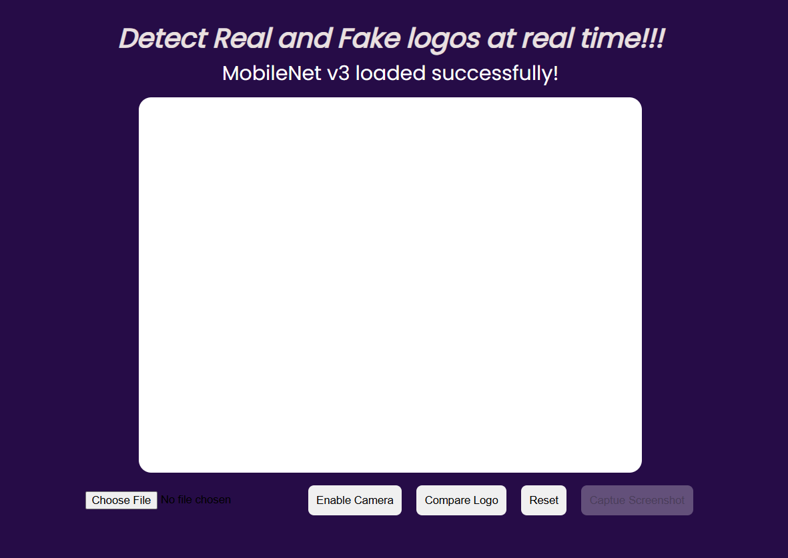
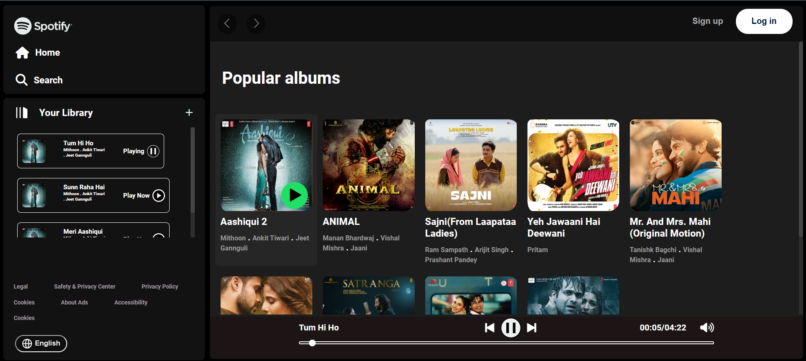
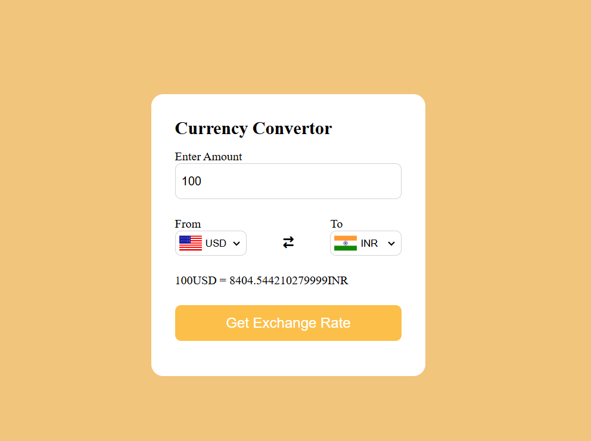

I developed a real-and-fake logo detector using the machine-learning skills I've acquired, leveraging my proficiency in JavaScript to create a functional prototype on a webpage. This model employs a pre-trained MobileNet V3 model to analyze the similarity between real and counterfeit logos, predicting authenticity based on a similarity percentage. So far, this project is still in its prototype phase, but I believe it has significant potential. With guidance from a mentor or an experienced professional, we could transform it into a comprehensive tool with real-world applications. I showcased this project at the Smart Maker Festival (SMF) at IEM Gurukul campus. Although we didn’t win any awards, the experience was invaluable; we gained fresh ideas for improvement and left a positive impression on the judges with our current prototype.
This Spotify clone represents a significant milestone in my journey as a developer, showcasing the potential of coding to create engaging applications. The project closely resembles Spotify's web interface while introducing custom song folders. Using JavaScript, I implemented a dynamic system that seamlessly loads songs when a folder card is clicked, enhancing the user experience and demonstrating my frontend skills. Focusing on HTML, CSS, and JavaScript, I have learned to create visually appealing and responsive designs. This project challenges me to balance aesthetic replication with my own creativity. Looking ahead, I plan to master backend development to evolve this into a fully functional platform. By integrating server-side technologies, I aim to add features such as user authentication and personalized playlists, transforming it into a comprehensive music streaming service. This project reflects my commitment to continuous learning and my passion for blending music with technology.
The currency converter is a frontend project that utilizes an API to deliver real-time currency exchange rates. This project has greatly enhanced my understanding of how APIs work, making it particularly meaningful to me despite its simplicity. In the implementation, I employed JavaScript logic to initiate API calls whenever a user performs a currency conversion. This ensures that the exchange rates reflect current values, although they may occasionally seem outdated due to the older API being used. Fortunately, this issue can be easily addressed by transitioning to a more up-to-date API, which would enhance the functionality and accuracy of the converter even further.
I’ve had the opportunity to work on a variety of projects, including an Amazon clone, a Netflix clone, and some enjoyable games like tic-tac-toe and rock-paper-scissors, as well as a personal portfolio website. Each of these projects has contributed to my growth as a developer. However, the three websites I highlighted are particularly important to me. By the time I completed them, I gained valuable insights and honed my skills in web development, design, and user experience. These experiences have shaped my approach to future projects and deepened my understanding of the development process.
If you’d like to return to the homepage, simply click the button below!
Home